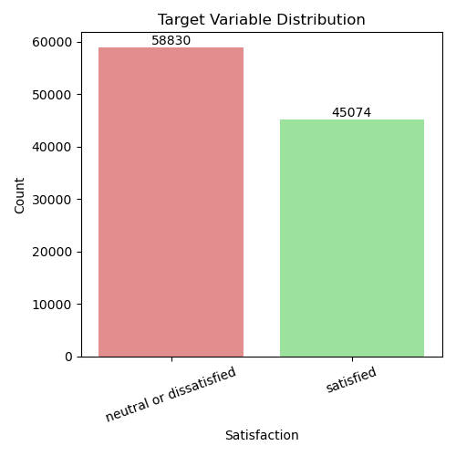
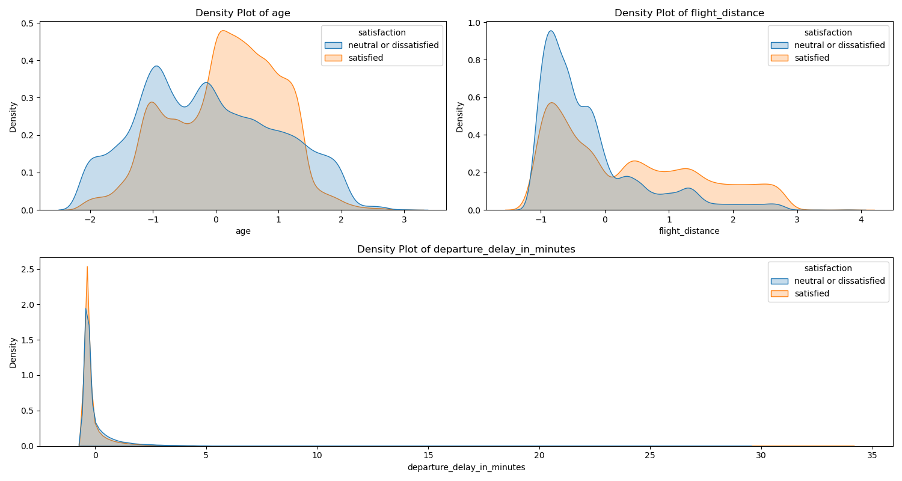
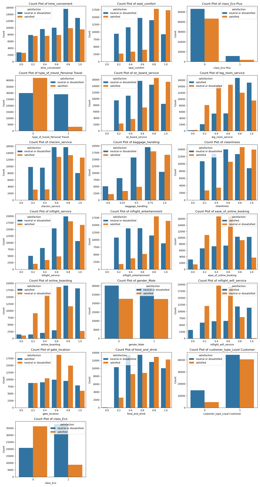
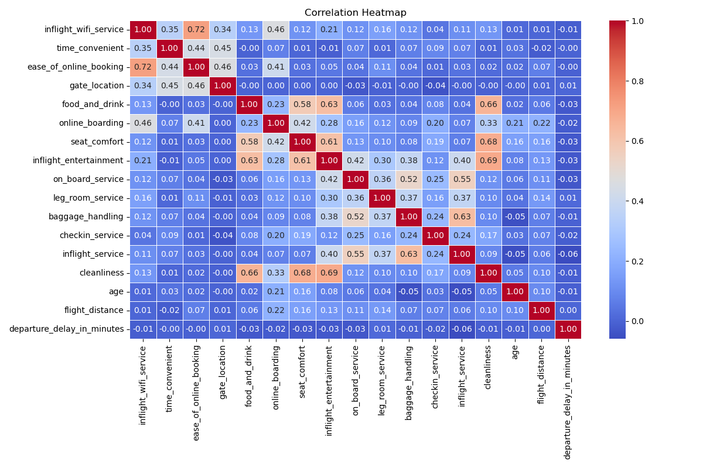
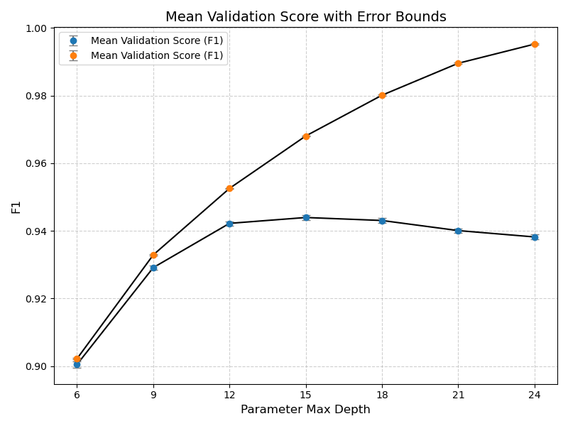

| neutral or dissatisfied | satisfied | accuracy | macro avg | weighted avg | |
|---|---|---|---|---|---|
| 0 | 0.94 | 0.96 | 0.95 | 0.95 | 0.95 |
| 1 | 0.97 | 0.93 | 0.95 | 0.95 | 0.95 |
| 2 | 0.96 | 0.94 | 0.95 | 0.95 | 0.95 |
| 3 | 14622.00 | 11354.00 | 0.95 | 25976.00 | 25976.00 |
Predicting US Airline Passenger Satisfaction: A Data-Driven Approach.
Summary
This project develops a classification model using a decision tree algorithm to predict airline customer satisfaction based on various factors, including in-flight service quality and customer demographic information. In this context, customer satisfaction refers to the overall experience and perception of the airline services by passengers. The study aimed to categorize customers into two distinct groups: those who are satisfied (denoted as “satisfied”) and those who are neutral or dissatisfied (denoted as “neutral or dissatisfied”). The best decision tree model was evaluated on an unseen test dataset, demonstrating strong overall F1-score of 0.94.
These results indicate that the model effectively detects patterns in customer satisfaction, making it a valuable tool for analyzing key factors that influence satisfaction. While the results are very promising, there are several limitations of the project that should be addressed. Firstly, the dataset contains only US airline observations which limits its usage to only US-based airline scenarios. Secondly, the dataset is relatively old, being about 5 years old. The airline industry might have faced significant changes. Thirdly, collecting detailed information about customer experiences, such as seat comfort ratings, can be challenging. And lastly, the exact method customer satisfaction was measured is unknown. Future efforts should prioritize collecting a new dataset that includes international airlines, as well as exploring alternative methods for quantifying subjective customer satisfaction.
Introduction
In the highly competitive field of air transport management, passenger satisfaction plays a critical role in making customer loyalty, providing operational insights, enhancing financial performance, and ensuring compliance with regulations and rankings (Eshaghi et al. (2024)). Passenger satisfaction is typically a subjective measure reflecting how well an airline meets or exceeds customer expectations. It can be evaluated through various metrics, including binary classifications (e.g., satisfied vs. dissatisfied). While there are numerous studies held on factors influencing customer satisfaction like service quality (Namukasa (2013)), it is very important to be able to predict the customer satisfaction with high accuracy for understanding how to improve and make better decisions. This study aims to create a reliable binary classification model with high performance to distinguish between satisfied and dissatisfied customers. To achieve the goal we employ a comprehensive dataset which contains different features convering a variety of attributes such as flight information, passenger demographics, and service quality ratings.
Methods
Dataset
The dataset used to answer this question was sourced in Kaggle, posted by Klein (2020). It is important to note that the dataset was originally posted by D (2018), which is then modified and cleaned by Klein (2020). Thought the exact origin of the dataset is unknown, it consists of only US airline data, as mentioned in the original source. It contains 24 columns and 129,880 observations where each observation in the dataset contains a variety of information about the flight information, passenger demographics, flight service quality, etc. The full dataset can be found here.
Analysis
After the dataset examination some features were removed from the analysis including ID and arrival_delay_in_minutes, where ID is a unique identifier column and arrival_delay_in_minutes contains the same information as departure_delay_in_minutes. The dataset contained variety of data types including numeric, nominal categorical and ordinal categorical that were already encoded into integers. The analysis assumed that the distances between the levels of the ordinal variables are consistent and equal. All data types were properly encoded and preprocessed using StandardScaler for numeric variables, OneHotEncoder for nominal categorical variables and MinMaxScaler for ordinal categorical variables. The dataset was initially split into train and test sets, which was combined and splitted to have control over the splitting strategy. Train dataset contained the 80% of the observations and the test set the rest 20%. Decision Tree Classifier was fitted to distinguish between satisfied and unsatisfied customers. Variety of metrics were used to train the model and assess the model’s performance. F1-score was used to tune the hyperparameters using Grid Search and cross-validation with 30-folds. The Python programming language (Van Rossum and Drake Jr (1995)) is used for conducting the analysis using a variety of packages including but now limited to Pandas (McKinney (2010)), scikit-learn (Pedregosa et al. (2011)) and matplotlib (Hunter (2007)).
Results
The random splitting of the dataset resulted in a representative distribution of the target variable across train and test sets. After examining the target distribution of the train dataset it was noticed that there are slightly more dissatisfied observations in the dataset than satisfied. The target distribution plot below (see Figure 1) shows that the train dataset contains 58,830 dissatisfied observations and 45,074 satisfied observations.

To understand how different variables relate to the target variable and if they might be useful for prediction, multiple bivariate checks are done. Data visualization techniques are used to assess the relationship between exploratory variables and the target variable. Density plots for continuous features revealed slightly different distributions across customer satisfaction levels. For instance, people who are dissatisfied on average are younger than those who are older. Additionally, customers on average are more satisfied with longer distances flights on average. On the other hand, departure delay on average can have a bit negative effect on the satisfaction. See figure Figure 2 for more insights.

Count plots for categorical variables illustrated how to frequency of specific categories differed between satisfied and dissatisfied customers (See figure Figure 3). Variables like seat comfort, leg room, cleanliness and inflight entertainment show clear patterns. These findings suggest that these features are not only intuitively aligned with customer expectations but also serve as important predictors in the model. The clear association may help the model to distinguish between the class quite effectively.

The correlation matrix in Figure Figure 4 is also examined to see if there are anomalous correlations (or multicollinearity) between different exploratory variables. Particularly correlations higher than 0.9 were checked. It is important to note that the scaled dataset was used to compute the correlation between numeric variables. While there are features that are correlated at some extent, none of them is critical. Thus, no features are removed based on the correlations.

Adecision tree classifier was trained to achieve a nonlinear separation between the classes. To optimize the default model even further and limit the overfitting, the max_depth hyperparameter was tuned using a 30-fold cross-validation strategy. F1-Score was used as the metric for tuning to account for the small imbalance in the dataset. The figure Figure 5 shows the performance of train and validation sets across different hyperparameter values. The best performing model was achieved using a max_depth of 15, balancing bias and variance effectively. The tuned model produced a robust predicting performance

Our model performed well on unseen, test data with impressive F1-score of 0.94. The classification report Table 1 shows the performance details even further. This results are promising and suggest that the model could be highly useful in identifying satisfied and dissatisfied customers. The high F1-score indicates a good balance between precision and recall, ensuring that the model balances effectively across the categories.
The results in the confusion matrix Figure 6 shows how well it predicts each class.

The exact performance measures can be found in the table Table 2 which evaluate the performance of the model across variety of metrics including Accuracy, Recall, Precision and F1-Score.
| Accuracy | Recall | Precision | F1-Score | |
|---|---|---|---|---|
| 0 | 0.95 | 0.93 | 0.96 | 0.94 |
The model achieved strong performance on the test dataset, with an accuracy of 0.95. It demonstrated high precision 0.96 in predicting “satisfied” passengers, meaning most of its positive predictions were correct. The recall was 0.93, indicating the model successfully identified most “satisfied” passengers, though there is slight room for improvement. The F1-score of 0.94 reflects a good balance between precision and recall, indicating overall reliable performance.
While the results are very promising, there are several limitations of the project that should be addressed. Firstly, the dataset contains only US airline observations which limits its usage to only US-based airline scenarios. This geographic limitation reduces the generalizability of the model to international airlines or those operating in different regulatory and market environments. Secondly, the dataset is relatively old, being about 5 years old. The airline industry might have faced significant changes, especially after COVID-19 period which could shift the customer expectations and factors affecting satisfaction. Thirdly, collecting detailed information about customer experiences, such as seat comfort ratings, can be challenging. These subjective ratings are often difficult to obtain, especially on a large scale. Finally, the way customer satisfaction was measured is unknown, as different people have different expectations. To address this limitations, we suggest collecting a new data set involving international airlines. Additionally, further research could explore alternative ways to quantify subjective binary customer satisfaction target.
References
D, John. 2018. “Passenger Satisfaction.” https://www.kaggle.com/datasets/johndddddd/customer-satisfaction.
Eshaghi, M. Sadegh, Mona Afshardoost, Gui Lohmann, and Brent D. Moyle. 2024. “Drivers and Outcomes of Airline Passenger Satisfaction: A Meta-Analysis.” Journal of the Air Transport Research Society 3: 100034. https://doi.org/10.1016/j.jatrs.2024.100034.
Hunter, J. D. 2007. “Matplotlib: A 2D Graphics Environment.” Computing in Science & Engineering 9 (3): 90–95. https://doi.org/10.1109/MCSE.2007.55.
Klein, TJ. 2020. “Airline Passenger Satisfaction.” https://www.kaggle.com/datasets/teejmahal20/airline-passenger-satisfaction.
McKinney, Wes. 2010. “Data Structures for Statistical Computing in Python.” In Proceedings of the 9th Python in Science Conference, edited by Stéfan van der Walt and Jarrod Millman, 51–56.
Namukasa, J. 2013. “The Influence of Airline Service Quality on Passenger Satisfaction and Loyalty: The Case of Uganda Airline Industry.” The TQM Journal 25 (5): 520–32. https://doi.org/10.1108/TQM-11-2012-0092.
Pedregosa, F., G. Varoquaux, A. Gramfort, V. Michel, B. Thirion, O. Grisel, M. Blondel, et al. 2011. “Scikit-Learn: Machine Learning in Python.” Journal of Machine Learning Research 12: 2825–30.
Van Rossum, Guido, and Fred L Drake Jr. 1995. Python Reference Manual. Centrum voor Wiskunde en Informatica Amsterdam.
Citation
BibTeX citation:
@online{muradyan,_azin_piran,_sopuruchi_chisom,_shengjia_yu.2024,
author = {Muradyan, Azin Piran, Sopuruchi Chisom, Shengjia Yu., Hrayr},
title = {Predicting {US} {Airline} {Passenger} {Satisfaction:} {A}
{Data-Driven} {Approach.}},
date = {2024-12-07},
langid = {en}
}
For attribution, please cite this work as:
Muradyan, Azin Piran, Sopuruchi Chisom, Shengjia Yu., Hrayr. 2024.
“Predicting US Airline Passenger Satisfaction: A Data-Driven
Approach.” December 7, 2024.